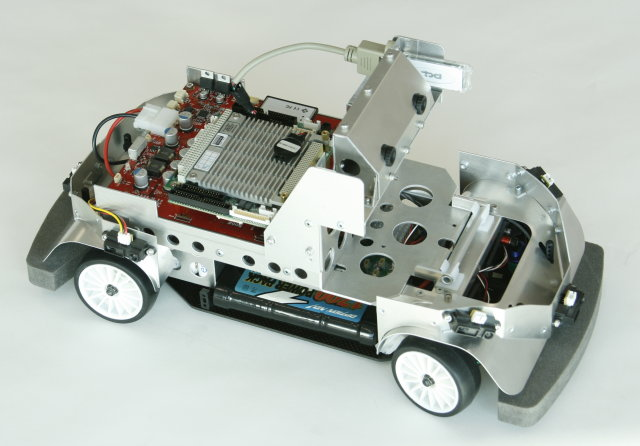

RoboCarは、カーロボティクス分野における、研究、教育用の プラットフォームとして開発された四輪自動車型のロボットです。
自動車の自動運転や、衝突回避アルゴリズムの研究、郡制御/インフラ協調の研究など、自動車に搭載する新しい技術研究の他、
環境認識分野、制御分野など、さまざまな分野の研究 にお使いいただけます。
RoboCarは、以下のような特徴をもちます。

(*)レーザーレンジファインダは別売オプションとなります。
RoboCarをご利用いただくために以下のものをご用意ください。
単三乾電池(アルカリまたはニッケル水素蓄電池) 12本。
SANYO製ENELOOPを推奨しています。 充電器とセットでご用意ください。
シリアルケーブル
9ピンD-SUBコネクタのクロスケーブル。 RoboCarとお使いのPCをつなぐために使用します。 シリアルポートがないPCをお使いの場合は、USB-シリアル変換ケーブルも必要になります。
無線LAN環境、PC
無線LANアクセスポイントと、同じネットワーク上のPCから RoboCarにログインしたり、コントロールします。 無線LANアクセスポイントの暗号化の方式は、WEPとします。
RoboCarは、高出力のモータを搭載した移動型のロボットです。 以下のようなところに注意して使用してください。
なお、ソフトウェアはWindows8にも対応しているため、環境を構築するために別のOSをインストールする必要はありません。